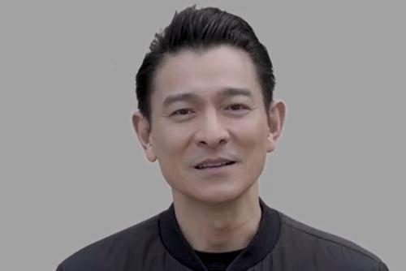
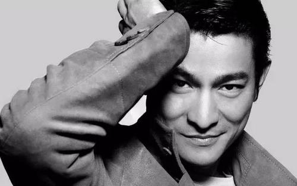
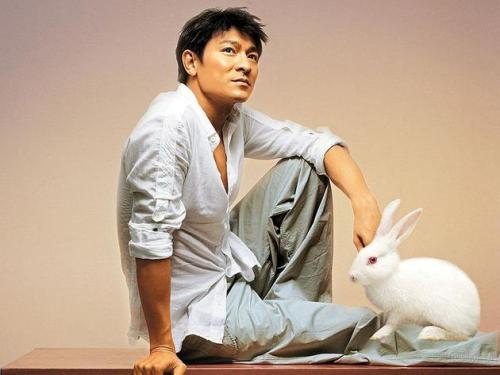

刘德华
刘德华，BBS，MH，JP（英语：Andy Lau Tak-wah；1961年9月27日－），香港演员、歌手、填词人、监制及出品人。
- 1990年代获封为香港乐坛“四大天王”之一。
- 1999年，刘德华获得“香港十大杰出青年”的荣誉，2000年11月则顺利荣登“世界十大杰出青年”，成为获此殊荣的少数几位香港艺人。
- 2006年7月7日，香港演艺学院因他“是香港最受尊重和喜爱的演艺名人之一，对香港电影及音乐贡献良多。
- 2008年，刘德华获香港特别行政区政府委任为太平绅士。
- 2010年4月23日，刘德华获任中国残疾人福利基金会理事并担任副理事长。
- 2010年5月2日，刘德华获颁第十二届“世界杰出华人奖”同时获颁授加拿大纽奔驰域蓝仕桥大学荣誉博士学位。
- 2013年12月8日，他又当选香港残疾人奥委会暨伤残人士体育协会副会长。
- 2017年12月他因演艺事业和公益事务上的成就被香港树仁大学授予荣誉文学博士学位。
- 2018年6月受邀加入美国电影艺术与科学学会成为奥斯卡金像奖评委。
影视事业
无线及影坛初期
- 1980年刘德华入读第10期无线电视艺员训练班，著名的同期同学有吴家丽、梁家辉、戚美珍、张之亮、徐锦江等，1981年毕业后任无线电视台演员。
- 1982年开始参演电影，首部作品是吴小云执导的《彩云曲》。另外，这时期刘跟洪金宝等人合作的群星动作片《最佳福星》，以及与周润发合作的江湖片《江湖情》都获取了良好的票房成绩。
高产阶段
- 1988年至1992年是刘德华拍片量最多的时期，这五年他参演了超过50部作品。
- 1990年他与吴倩莲在陈木胜的导演处女作《天若有情》中，演绎了小混混华Dee与千金小姐JOJO之间一段刻骨铭心的浪漫生死恋。
- 1991年的《九一神雕侠侣》是刘德华成立的天幕制作有限公司拍摄的首部作品。
港产黄金时代
- 1990年代中期已进入了产量锐减和票房下降的衰退阶段，不过刘德华的电影事业却一直在进步，佳作不断。
- 1999年杜琪峰执导的《暗战》开始，刘德华摆脱了过去比较偶像化的演绎方法，不断深入角色性格与内心成功实现转型，塑造了许多不同身份与个性的角色。
- 2005年在陈德森执导的奇幻悲剧电影《童梦奇缘》中，刘克服挑战借化妆技术呈现了巨大年龄跨度的演出，他的表现不仅成为视频的最大看点，其光仔一角又获金像奖最佳男主角提名。
合拍片时期
- 2003年以来香港与内地的电影合作不断加深，刘德华也经常在合拍片中担任主角。
- 2015年刘德华在华谊兄弟出品、改编自真人真事、中国女编剧兼作家彭三源编导的电影处女作《失孤》中演绎一名坚持寻子十多年的中国底层农民雷泽宽。
- 2017年刘德华监制并主演邱礼涛编导的大制作港产警匪片《拆弹专家》
生活照



公益活动
| 年份 |
担任大使
|
| 1996年 |
生活教育活动计划“健康大使”
|
| 2001年 |
世界杰出华人基金会“中华文化大使”
|
| 2002年 |
都江堰旅游形象大使
|
| 2004年 |
香港惩教署“更生大使”
|
| 2005年 |
中国电影百年形象大使
|
| 2006年 |
中国肝炎防治基金会
|
| 2008年 |
北京残奥会中国代表团爱心大使（拍摄有残奥会公益宣传片）
|
| 2012年 |
伦敦残奥会中国代表团爱心大使
|